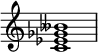
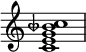
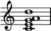
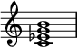
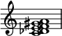

List of chords
Jump to navigation
Jump to search

The following is a list of musical chords and simultaneities:
| Code | Chord type |
|---|---|
| Major | Major chord |
| Minor | Minor chord |
| Augmented | Augmented chord |
| Diminished | Diminished chord |
| Indeterminate | Indeterminate chord |
| Predominant | Predominant chord |
| Suspended | Suspended chord |
| M3+d5 | Major third, flat five |
| Just | Just intonation |
| Bitonal | Bitonal chord |
| Atonal | Atonal chord |
| Name | Chord on C | Sound | # of p.c.-Forte # | p.c. #s | Quality |
|---|---|---|---|---|---|
| Augmented chord | Play | 3-12 | 0 4 8 | Augmented | |
| Augmented eleventh chord[1] | Play | 6-34 | 0 4 7 t 2 6 | Major | |
| Augmented major seventh chord |
 |
Play | 4-19 | 0 4 8 e | Augmented |
| Augmented seventh chord |
 |
Play | 4-24 | 0 4 8 t | Augmented |
| Augmented sixth chord |
|
3-8 4-25 4-27B |
0 4 t 0 4 6 t 0 4 7 t |
Predominant | |
| Diminished chord | Play | 3-10 | 0 3 6 | Diminished | |
| Diminished major seventh chord | Play | 4-18 | 0 3 6 e | Diminished | |
| Diminished seventh chord (leading-tone and secondary chord) |

|
Play | 4-28 | 0 3 6 9 | Diminished |
| Dominant | Play | 3-11 | 0 4 7 | Major | |
| Dominant eleventh chord | Play | 6-33 | 0 4 7 t 2 5 | Major | |
| Dominant minor ninth | Play | 5-31 | 0 4 7 t 1 | Major | |
| Dominant ninth | Play | 5-34 | 0 4 7 t 2 | Major | |
| Dominant parallel | Play | 3-11 | 0 3 7 | Minor | |
| Dominant seventh chord |
 |
Play | 4-27 | 0 4 7 t | Major |
| Dominant seventh flat five chord | Play | 4-25 | 0 4 6 t | Diminished | |
| Dominant seventh sharp nine / Hendrix chord | Play | 5-32 | 0 4 7 t 3 | Major | |
| Dominant thirteenth chord | Play | 7-35 | 0 4 7 t 2 5 9 | Major | |
| Dream chord | Play | 4-6 | 0 5 6 7 | Just | |
| Elektra chord | Play | 5-32 | 0 7 9 1 4 | Bitonal | |
| Farben chord | Play | 5-z17 | 0 8 e 4 9 | Atonal | |
| Half-diminished seventh chord |
 |
Play | 4-27 | 0 3 6 t | Diminished |
| Harmonic seventh chord |

|
Play | 4-27 | 0 4 7 t | Major |
| Leading-tone triad | Play | 3-10 | 0 3 6 | Diminished | |
| Lydian chord | Play | 5-20 | 0 4 7 e 6 | Major | |
| Magic chord | Play | 8 | 0 1 5 6 t 0 3 5 | Just | |
| Major chord | Play | 3-11 | 0 4 7 | Major | |
| Major eleventh chord | Play | 6-z25 | 0 4 7 e 2 5 | Major | |
| Major seventh chord |
 |
Play | 4-20 | 0 4 7 e | Major |
| Major seventh sharp eleventh chord | Play | 5-30 | 0 4 8 e 6 | Augmented | |
| Major sixth chord | Play | 4-26 | 0 4 7 9 | Major | |
| Major sixth ninth chord ("6 add 9",[2] Nine six,[3] 6/9) |

|
Play | 5-35 | 0 4 7 9 2 | Major |
| Major ninth chord | Play | 5-27 | 0 4 7 e 2 | Major | |
| Major thirteenth chord | Play | 7-35 | 0 4 7 e 2 6 9 | Major | |
| Mediant | Play | 3-11 | 0 3 7 | Minor | |
| Minor chord | Play | 3-11 | 0 3 7 | Minor | |
| Minor eleventh chord | Play | 6-32 | 0 3 7 t 2 5 | Minor | |
| Minor major seventh chord |

|
Play | 4-19 | 0 3 7 e | Minor |
| Minor ninth chord | Play | 5-27 | 0 3 7 t 2 | Minor | |
| Minor seventh chord | Play | 4-26 | 0 3 7 t | Minor | |
| Minor sixth chord | Play | 4-27 | 0 3 7 9 | Minor | |
| Minor sixth ninth chord (6/9) | Play | 5-29 | 0 3 7 9 2 | Minor | |
| Minor thirteenth chord | Play | 7-35 | 0 3 7 t 2 5 9 | Minor | |
| Mystic chord | Play | 6-34 | 0 6 t 4 9 2 | Atonal | |
| Neapolitan chord | Play | 3-11 | 1 5 8 | Major | |
| Ninth augmented fifth chord[2][4] | Play | 5-33 | 0 4 8 t 2 | Augmented | |
| Ninth flat fifth chord[2] | Play | 5-33 | 0 4 6 t 2 | M3+d5 | |
| Northern lights chord | Play | 11-1 | 1 2 8 0 3 6 7 t e 4 7 | Atonal | |
| "Ode-to-Napoleon" hexachord |

|
Play | 6-20 | 0 1 4 5 8 9 | Atonal |
| Petrushka chord |
 |
Play | 6-30 | 0 1 4 6 7 t | Bitonal |
| Power chord P5 |
Play | 2-5 | 0 7 | Indeterminate | |
| Psalms chord | Play | 3-11 | 0 3 7 | Minor | |
| Secondary dominant |
 |
Play | 3-11 | 0 4 7 | Major |
| Secondary leading-tone chord |
![{
#(set-global-staff-size 16)
\override Score.TimeSignature #'stencil = ##f
\new PianoStaff <<
\new Staff <<
\new Voice \relative c'' {
\stemUp \clef treble \key c \major \time 4/4
a2 g g1
}
\new Voice \relative c' {
\stemDown
es2 d e1
}
>>
\new Staff <<
\new Voice \relative c' {
\stemUp \clef bass \key c \major \time 4/4
c2 b c1
}
\new Voice \relative c {
\stemDown
fis2_\markup { \translate #'(-5 . 0) { \concat { "C: vii" \raise #0.6 \small "o7" "/V" \hspace #1 "V" \hspace #4 "I" } } }
g c,1 \bar "||"
}
>>
>> }](index-Dateien/hrbvliv4.png) |
Play | 3-10 | 0 3 6 | Diminished |
| Secondary supertonic chord |
![{
#(set-global-staff-size 16)
\override Score.TimeSignature #'stencil = ##f
\new PianoStaff <<
\new Staff <<
\new Voice \relative c'' {
\stemUp \clef treble \key c \major \time 4/4
g2 fis g1
}
\new Voice \relative c' {
\stemDown
c2 c d1
}
>>
\new Staff <<
\new Voice \relative c' {
\stemUp \clef bass \key c \major \time 4/4
a2 a b1
}
\new Voice \relative c {
\stemDown
a2_\markup { \translate #'(-4 . 0) { \concat { "C: ii" \raise #0.5 \small "7" "/V" \hspace #1 "V" \raise #1 \small "7" "/V" \hspace #1.5 "V" } } }
d g1 \bar "||"
}
>>
>> }](index-Dateien/dce6fzwk.png) |
Play | 3-11 | 0 3 7 | Minor |
| Seven six chord[5] | Play | 5-25 | 0 4 7 9 t | Major | |
| Seventh suspension four chord[6] | Play | 4-23 | 0 5 7 t | Suspended | |
| So What chord | Play | 5-35 | 0 5 t 3 7 | Bitonal | |
| Suspended chord | Play | 3-9 | 0 5 7 | Suspended | |
| Subdominant | Play | 3-11 | 0 4 7 | Major | |
| Subdominant parallel | Play | 3-11 | 0 3 7 | Minor | |
| Submediant | Play | 3-11 | 0 3 7 | Minor | |
| Subtonic | Play | 3-11 | 0 4 7 | Major | |
| Supertonic | Play | 3-11 | 0 3 7 | Minor | |
| Thirteenth flat ninth chord[2] | Play | 6-27 | 0 4 7 t 1 x 9[7] | Major | |
| Thirteenth flat ninth flat fifth chord[2] | Play | 6-z49 | 0 4 6 t 1 x 9[7] | M3+d5 | |
| Tonic counter parallel | Play | 3-11 | 0 3 7 | Minor | |
| Tonic | Play | 3-11 | 0 4 7 | Major | |
| Tonic parallel | Play | 3-11 | 0 3 7 | Minor | |
| Tristan chord | Play | 4-27 | 0 3 6 t | Predominant | |
| Viennese trichord | Play | 3-5A | 0 1 6 or 0 6 7 |
Atonal |
See also[edit]
- Added tone chord
- Altered chord
- Approach chord
- Chord names and symbols (popular music)
- Chromatic mediant
- Common chord (music)
- Diatonic function
- Eleventh chord
- Extended chord
- Jazz chord
- Lead sheet
- List of musical intervals
- List of pitch intervals
- List of musical scales and modes
- List of pitch-class sets
- Ninth chord
- Open chord
- Passing chord
- Primary triad
- Quartal chord
- Root (chord)
- Seventh chord
- Synthetic chord
- Thirteenth chord
- Tone cluster
- Triad (music)
- Upper structure
References[edit]
- ^ Pearse, John (1977). The Guitarist's Picture Chord Encyclopedia, p.31. ISBN 0-8256-2199-2.
- ^ Jump up to: a b c d e Bay, William (10 April 1971). Encyclopedia of guitar chords. Mel Bay Publications. p. 2. ISBN 978-0-87166-664-2. Retrieved 27 May 2011.
- ^ Pearse (1977), p.35.
- ^ Pearse (1977), p.27.
- ^ Pearse (1977), p.34.
- ^ Pearse (1977), p.24
- ^ Jump up to: a b x could be either 5, 6, or nothing, depending on the eleventh of the chord.